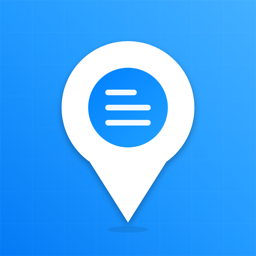

ここメモは、気になった場所にピンを立ててメモを残せる地図アプリです。ボードで整理したり、フレンドと共有したりできます。
基本機能は無料で使えます。プレミアムプランでは、ボード・ピン・接近通知が無制限になり、ボードメンバーの上限も広がります。
不具合のご報告・ご要望・ご質問は、下記メールアドレスまでお気軽にご連絡ください。
よくある質問:
KokoMemo is a map app for dropping pins and notes on places you want to remember. Organize them into boards and share them with friends.
Basic features are free. Premium gives you unlimited boards, pins and proximity alerts, plus more members per board.
For bug reports, feature requests or questions, please email us at the address below.
FAQ: